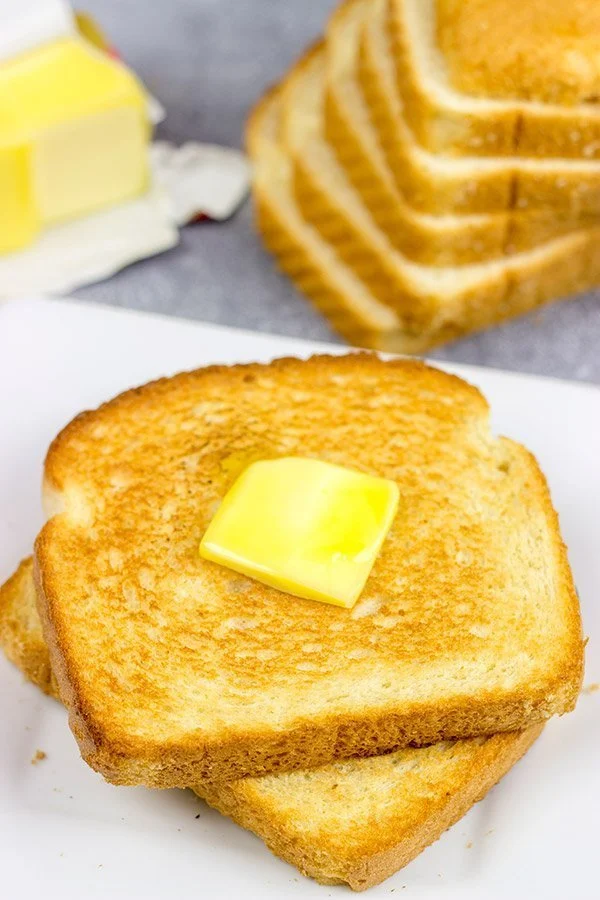

Home
Bread Butter Toast

Description
When you’re craving something sweet in the morning, this butter toast is the ideal breakfast.
Ingredients:
- 2 bread slices
- 1 tbsp butter
Steps:
- Spread butter on both bread slices.
- Toast them in a pan until golden brown.
- Serve hot.